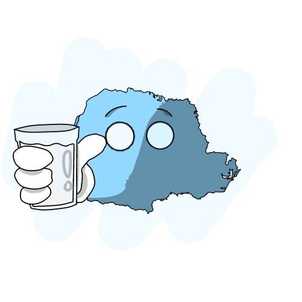

Relação do Paraná com Leite
ㅤCom aproximadamente 3,9 bilhões de litros por ano e representando a cadeia produtiva mais importante para os agricultores familiares do Estado, o Paraná é o terceiro maior produtor de leite do Brasil. ㅤEsta produção é obtida por 110.000 produtores, dos quais 86% são produtores pequenos com até 250 litros/dia. O sistema leva como base a produção a pasto, sendo que a maior parte das propriedades tem até 50 hectares.
ㅤO desafio principal da atividade é aumentar a produtividade e a renda dos produtores que têm o leite como principal fonte de renda. Tendo isso em vista, a ação do Estado é importante para construir um ambiente favorável em todos os segmentos da cadeia produtiva para a adesão de tecnologias de produção e de industrialização, organização dos produtores e para incitar relações estáveis entre os diferentes segmentos da cadeia produtiva, especialmente entre os produtores e as indústrias de laticínios, visando garantir um processo de comercialização justo e seguro.
